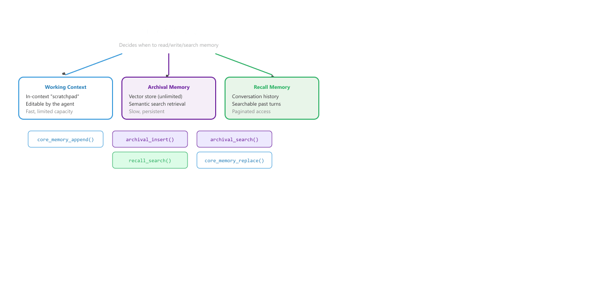

A good assistant remembers you. A great one knows when to forget.
Echo, Long-Memoried AI Agent
Short-term memory (covered in Section 37.3) keeps the current conversation coherent. Long-term memory is what lets a system carry knowledge across sessions, weeks, and months: vector stores that retrieve old context by meaning, user profiles that accumulate stable preferences, self-managing architectures like MemGPT/Letta where the LLM itself decides what to remember, and memory-as-a-service platforms that package all of this behind an API. This section ties those pieces together, compares them, shows how to consolidate and evaluate them, and closes with a hands-on lab that wires short-term and long-term memory into one chatbot.
Prerequisites
This section assumes the short-term memory foundations from Section 37.3 (sliding-window buffers, progressive summarization, the layered memory diagram). It also leans heavily on the embedding and retrieval material in Section 31.1 (for vector-based memory retrieval) and the dialogue-architecture background from Section 37.1. Comfort with function calling and tool use (Chapter 12) helps when reading the MemGPT/Letta material.
37.5.1 Vector Store Memory
The Microsoft Bing "Sydney" rollout in February 2023 famously had no long-term memory, which turned out to be a feature, not a bug. Users discovered they could push the model into elaborate persona spirals over many turns; Microsoft's fix was simply to reset every conversation after a handful of messages. Long-term memory is now the holy grail of conversational AI precisely because the early lesson was that an LLM with a perfect 1990s-style buffer memory and no off switch is a customer-support story you do not want to be in.
Vector store memory enables semantic retrieval of past conversation content. Rather than relying on recency alone (as the sliding window does), vector search retrieves the most relevant past exchanges based on what the user is currently discussing. This is especially powerful for long-running relationships where a user might reference something from weeks ago.
# Define MemoryEntry, VectorMemoryStore; implement __init__, store, retrieve
from openai import OpenAI
import numpy as np
from dataclasses import dataclass
from typing import Optional
client = OpenAI()
@dataclass
class MemoryEntry:
text: str
embedding: list[float]
timestamp: float
session_id: str
entry_type: str # "turn", "summary", "fact"
metadata: dict = None
class VectorMemoryStore:
"""Semantic memory using embeddings for retrieval."""
def __init__(self):
self.entries: list[MemoryEntry] = []
def store(self, text: str, session_id: str,
entry_type: str = "turn",
metadata: dict = None) -> None:
"""Embed and store a memory entry."""
import time
embedding = self._embed(text)
entry = MemoryEntry(
text=text,
embedding=embedding,
timestamp=time.time(),
session_id=session_id,
entry_type=entry_type,
metadata=metadata or {}
)
self.entries.append(entry)
def retrieve(self, query: str, top_k: int = 5,
entry_type: Optional[str] = None,
recency_weight: float = 0.1) -> list[dict]:
"""Retrieve the most relevant memories for a query."""
query_embedding = self._embed(query)
scored = []
for entry in self.entries:
if entry_type and entry.entry_type != entry_type:
continue
# Cosine similarity
similarity = self._cosine_sim(
query_embedding, entry.embedding
)
# Blend similarity with recency
import time
age_hours = (time.time() - entry.timestamp) / 3600
recency_score = 1.0 / (1.0 + age_hours * 0.01)
final_score = (
(1 - recency_weight) * similarity
+ recency_weight * recency_score
)
scored.append({
"text": entry.text,
"score": final_score,
"similarity": similarity,
"entry_type": entry.entry_type,
"session_id": entry.session_id,
})
scored.sort(key=lambda x: x["score"], reverse=True)
return scored[:top_k]
def _embed(self, text: str) -> list[float]:
"""Generate embedding for text."""
response = client.embeddings.create(
model="text-embedding-3-small",
input=text
)
return response.data[0].embedding
@staticmethod
def _cosine_sim(a: list[float], b: list[float]) -> float:
a, b = np.array(a), np.array(b)
return float(np.dot(a, b) / (np.linalg.norm(a) * np.linalg.norm(b)))
# Example: Store and retrieve memories
store = VectorMemoryStore()
store.store(
"User prefers Python over JavaScript for backend work",
session_id="session_001", entry_type="fact"
)
store.store(
"User is building a recipe recommendation app",
session_id="session_001", entry_type="fact"
)
store.store(
"Discussed database options: PostgreSQL vs MongoDB. "
"User leaning toward PostgreSQL for relational data.",
session_id="session_002", entry_type="summary"
)
# Later, when user asks about databases again
results = store.retrieve("What database should I use?", top_k=2)
for r in results:
print(f"[{r['entry_type']}] {r['text'][:80]}... (score: {r['score']:.3f})")Once you have many memory entries, batch cosine similarity against the whole store is one call away. For production-scale retrieval, swap the linear scan for a FAISS index.
Show code
from sklearn.metrics.pairwise import cosine_similarity
import numpy as np
embs = np.vstack([e.embedding for e in self.entries]) # (N, d)
sims = cosine_similarity(np.array(query_embedding).reshape(1, -1), embs)[0]
top_idx = sims.argsort()[::-1][:top_k]scikit-learn.37.5.2 MemGPT / Letta Architecture
MemGPT (now Letta) introduced a groundbreaking approach to memory management: instead of the application code managing memory, the LLM itself decides when and what to save, retrieve, and forget. This self-managed memory architecture is inspired by operating system virtual memory, where a hierarchical memory system creates the illusion of unlimited memory through intelligent paging between fast (context window) and slow (external storage) tiers. Figure 37.5.1a depicts the MemGPT/Letta architecture with its three memory tiers.

The MemGPT approach requires the LLM to reliably use memory management functions. In practice, this works best with capable models (GPT-4 class or above) that can reason about when information should be saved for later versus kept in working memory. Smaller models tend to either save too much (filling archival memory with noise) or too little (failing to preserve important context). Careful prompt engineering for the memory management instructions is essential.
The tiered design borrows directly from operating-system virtual memory. Let $C$ be the LLM context-window size in tokens, $W$ the working-context block size, and $H$ the rolling conversation history. The agent must satisfy a hard constraint at every turn:
$$ W + H + \text{prompt\_overhead} \;\le\; C , $$
and when the constraint is about to be violated, the controller invokes archival_insert(text) to evict information to slow storage and frees the corresponding tokens in $W$. Retrieval from archival memory is modeled as a top-$k$ semantic search,
$$ \mathrm{archival\_search}(q) \;=\; \mathop{\mathrm{top\text{-}k}}_{e \in \mathcal{A}} \, \cos\bigl(\phi(q),\, \phi(e)\bigr) , $$
where $\mathcal{A}$ is the archival store and $\phi$ is the embedding function. The full memory ceiling that a MemGPT agent appears to have is the sum of the three tiers, $|\mathcal{W}| + |\mathcal{A}| + |\mathcal{R}|$, but only the first tier counts against the context budget $C$.
A Letta agent runs on GPT-4o with $C = 128{,}000$ context tokens. The system prompt and persona block reserve 2{,}000 tokens. The working context block is sized at $W = 4{,}000$ tokens (the user-facing scratchpad) and the rolling chat history $H$ is currently 118{,}000 tokens. With 4{,}000 tokens of headroom left, the controller starts approaching the ceiling. The agent decides to summarize the oldest 40{,}000 tokens of $H$ into a 600-token summary and calls archival_insert on each of the original 40 turns, then calls core_memory_replace to write the summary into $W$. The new total drops to $2000 + 4000 + 78600 \approx 84{,}600$ tokens, freeing roughly 43{,}000 tokens for the next 50 turns. On turn 213 a user asks "what database did we pick last Tuesday?". The controller emits archival_search("database pick Tuesday"), which returns the top-3 hits from $\mathcal{A}$ with cosine scores $0.89, 0.84, 0.71$. Only the top hit (the actual decision summary) is paged back into $W$ before the LLM drafts its reply, illustrating the OS-style page-in step that gives MemGPT its unbounded effective memory.
letta for stateful agents with persistent memoryThe MemGPT/Letta architecture above is not just a paper, it is a pip-installable package: letta (formerly the pymemgpt SDK; Letta Inc., 2024) ships the three-tier memory loop, the memory-management tool calls, and a Postgres-backed persistence layer behind a small client API. Prefer letta when you want stateful multi-session agents today without writing the function-calling-driven memory loop by hand; reach for raw OpenAI / Anthropic tool calls only when the agent's memory policy must diverge from MemGPT's three-tier model.
Show code
pip install letta
# letta server runs on http://localhost:8283 (Postgres + agent runtime)
from letta_client import Letta, MessageCreate
client = Letta(base_url="http://localhost:8283")
agent = client.agents.create(
name="alex_assistant",
memory_blocks=[
{"label": "human", "value": "The user is Alex, a data engineer in Berlin."},
{"label": "persona", "value": "You are a concise, technical assistant."},
],
model="openai/gpt-4o-mini", embedding="openai/text-embedding-3-small",
)
# Same agent_id is reused across sessions; memory persists.
reply = client.agents.messages.create(
agent_id=agent.id,
messages=[MessageCreate(role="user", content="Remember I prefer dbt over Airflow.")],
)37.5.3 Session Persistence and User Profiles
For applications where users return across multiple sessions, persistent storage bridges the gap between conversations. A user profile system accumulates knowledge about the user over time, creating an increasingly personalized experience. The profile should capture stable preferences, biographical facts, and interaction patterns without storing sensitive data unnecessarily.
import json
from datetime import datetime
from pathlib import Path
class UserProfileManager:
"""Manages persistent user profiles across sessions."""
def __init__(self, storage_dir: str = "./user_profiles"):
self.storage_dir = Path(storage_dir)
self.storage_dir.mkdir(exist_ok=True)
def load_profile(self, user_id: str) -> dict:
"""Load or create a user profile."""
profile_path = self.storage_dir / f"{user_id}.json"
if profile_path.exists():
with open(profile_path) as f:
return json.load(f)
return self._create_default_profile(user_id)
def save_profile(self, user_id: str, profile: dict) -> None:
"""Persist the user profile to disk."""
profile["last_updated"] = datetime.now().isoformat()
profile_path = self.storage_dir / f"{user_id}.json"
with open(profile_path, "w") as f:
json.dump(profile, f, indent=2)
def update_from_conversation(self, user_id: str,
conversation: list[dict]) -> dict:
"""Extract profile updates from a completed conversation."""
profile = self.load_profile(user_id)
# Use LLM to extract profile-worthy information
extraction_prompt = f"""Analyze this conversation and extract any new
information about the user that should be remembered for future sessions.
Current profile:
{json.dumps(profile['preferences'], indent=2)}
Conversation:
{self._format_conversation(conversation)}
Return JSON with two fields:
- "new_preferences": dict of any new preferences discovered
- "new_facts": list of new biographical/contextual facts
- "corrections": dict of any corrections to existing profile data
Only include genuinely new or corrected information."""
response = client.chat.completions.create(
model="gpt-4o-mini",
messages=[{"role": "user", "content": extraction_prompt}],
response_format={"type": "json_object"},
temperature=0
)
updates = json.loads(response.choices[0].message.content)
# Apply updates
if updates.get("new_preferences"):
profile["preferences"].update(updates["new_preferences"])
if updates.get("new_facts"):
profile["facts"].extend(updates["new_facts"])
if updates.get("corrections"):
profile["preferences"].update(updates["corrections"])
# Update session count
profile["session_count"] += 1
profile["last_session"] = datetime.now().isoformat()
self.save_profile(user_id, profile)
return profile
def get_context_string(self, user_id: str) -> str:
"""Generate a context string for inclusion in system prompts."""
profile = self.load_profile(user_id)
parts = [f"Returning user (session #{profile['session_count']})."]
if profile["preferences"]:
prefs = "; ".join(
f"{k}: {v}" for k, v in profile["preferences"].items()
)
parts.append(f"Known preferences: {prefs}")
if profile["facts"]:
parts.append("Known facts: " + "; ".join(profile["facts"][-5:]))
return " ".join(parts)
def _create_default_profile(self, user_id: str) -> dict:
return {
"user_id": user_id,
"created": datetime.now().isoformat(),
"last_updated": datetime.now().isoformat(),
"last_session": None,
"session_count": 0,
"preferences": {},
"facts": [],
"interaction_style": {}
}
@staticmethod
def _format_conversation(conversation: list[dict]) -> str:
return "\n".join(
f"{m['role'].title()}: {m['content']}"
for m in conversation
)User profile systems store personal information that may be subject to data protection regulations (GDPR, CCPA). Implement clear data retention policies, give users the ability to view and delete their profiles, minimize the data you store, and ensure appropriate encryption for data at rest. Never store sensitive information (health conditions, financial data, relationship details) without explicit consent and a clear justification.
37.5.4 Comparing Memory Approaches
| Approach | Capacity | Retrieval | Complexity | Best For |
|---|---|---|---|---|
| Sliding Window | Fixed (last N turns) | Recency only | Low | Short conversations, simple bots |
| Summarization | Extended | Most recent summary | Medium | Medium-length sessions |
| Vector Store | Unlimited | Semantic similarity | Medium-High | Multi-session, topic revisits |
| Entity Extraction | Compact facts | Key-value lookup | Medium | User profiles, preferences |
| MemGPT / Letta | Unlimited + managed | Agent-driven search | High | Complex, long-running agents |
| Hybrid (recommended) | Tiered | Recency + semantic | High | Production applications |
37.5.5 Memory-as-a-Service Platforms
Building a production-grade memory system from scratch, as the code examples above demonstrate, requires significant engineering effort: embedding pipelines, vector stores, summarization logic, conflict resolution, and persistence layers. A growing category of "Memory-as-a-Service" (MaaS) platforms packages these capabilities into managed services, allowing developers to add persistent, intelligent memory to their applications with a few API calls instead of months of custom development.
Why does this shift matter? Just as managed vector databases (Pinecone, Weaviate) replaced DIY FAISS deployments for many teams, managed memory services are replacing DIY memory architectures for conversational AI. The platforms handle the hard engineering problems (deduplication, conflict resolution, importance scoring, forgetting) so that application developers can focus on the conversation experience.
37.5.5.1 Platform Comparison
| Platform | Architecture | Key Features | Best For |
|---|---|---|---|
| Mem0 | Graph + vector hybrid memory layer | Automatic memory extraction from conversations; user, session, and agent-level memories; graph-based relationships between memories; simple add/search API | Applications needing personalization across sessions with minimal setup; teams that want "drop-in" memory |
| Zep | Temporal knowledge graph + vector store | Automatic entity extraction and relationship tracking; temporal awareness (memories have timestamps and decay); built-in summarization; dialog classification; integrates with LangChain and LlamaIndex | Enterprise applications needing structured entity memory with temporal reasoning; compliance-sensitive use cases |
| MemGPT / Letta | Agent-managed tiered memory (see Section 37.5.2 above) | LLM-controlled memory management; three memory tiers (working, archival, recall); the agent decides when and what to remember; stateful agent sessions; open-source core | Agentic applications where the AI needs to autonomously manage its own memory; complex, long-running assistants |
# Mem0: Drop-in memory for any LLM application
# pip install mem0ai
from mem0 import Memory
# Initialize with default configuration
memory = Memory()
# Add memories from a conversation
conversation = [
{"role": "user", "content": "I'm a vegetarian and I love Italian food"},
{"role": "assistant", "content": "Great! I can suggest some vegetarian Italian dishes."},
{"role": "user", "content": "I also have a gluten allergy"}
]
# Mem0 automatically extracts and stores relevant memories
memory.add(conversation, user_id="alice_123")
# Later, retrieve relevant memories for a new query
results = memory.search("What should I cook for dinner?", user_id="alice_123")
for r in results:
print(f" Memory: {r['memory']} (relevance: {r['score']:.3f})")
# Output:
# Memory: User is vegetarian (relevance: 0.891)
# Memory: User loves Italian food (relevance: 0.847)
# Memory: User has a gluten allergy (relevance: 0.823)
# Zep: Entity-aware temporal memory
# pip install zep-cloud
from zep_cloud.client import Zep
zep = Zep(api_key="your-api-key")
# Add a session with messages
session = zep.memory.add_session(session_id="session_001", user_id="alice_123")
zep.memory.add(
session_id="session_001",
messages=[
{"role": "user", "content": "My doctor recommended I eat more iron-rich foods"},
{"role": "assistant", "content": "Spinach and lentils are great vegetarian sources of iron."}
]
)
# Zep automatically extracts entities and relationships:
# Entity: alice_123 -> has_condition: needs more iron
# Entity: alice_123 -> dietary_preference: vegetarian
# These are queryable and temporally awareThe choice between DIY memory and a managed platform depends on your control requirements. DIY (using the patterns from this section and the short-term tools in Section 37.3) gives you full control over what is stored, how it is retrieved, and how it decays. Managed platforms trade control for speed of implementation and battle-tested edge case handling. For most production applications that need cross-session memory, starting with a managed platform and migrating to custom only if needed is the pragmatic path. The agent memory architectures in Section 26.1 extend these patterns to agentic use cases.
Build a minimal long-term memory: after each user turn, write the message to a vector store with a timestamp; at the start of each new session, retrieve top-3 memories semantically related to the user's first message and prepend them to the system prompt. Run a 3-session test where session 1 establishes "I'm allergic to peanuts" and session 3 asks about restaurant recommendations. Verify the allergy is surfaced.
Answer Sketch
Expected pipeline: chroma or faiss + an embedding model + a 2-line "retrieve then prepend" hook. Common bug: storing only the last message instead of the full turn, so the allergy declaration is lost if you stored a follow-up. Another bug: not de-duplicating retrieved memories, so the same fact appears three times in the prompt. The success criterion is whether the model declines a peanut-containing restaurant in session 3.
For each scenario, choose the best long-term memory architecture (vector store, structured user profile, or MemGPT/Letta) and justify in one sentence: (a) coaching app that tracks workout history, weight, and goals; (b) general assistant that should "remember" anything the user mentions, across years; (c) customer-service bot where a single conversation can span days with frequent re-prompting.
Answer Sketch
(a) Structured profile. Workout history and weight are typed key-value data; vector search over freeform text is the wrong tool. (b) Vector store. Open-domain "remember everything I said" needs a similarity-search retrieval over freeform memories. (c) MemGPT. The OS-like working memory + recall storage handles long-running sessions where context gets paged in and out, which neither profile nor naive vector store handles cleanly.
What's Next?
In the next part of this section, Section 37.6: Memory Consolidation, Evaluation & End-to-End, long-term memory architectures: vector store memory, the memgpt/letta self-managing architecture, session persistence with user profiles, comparing memory approaches, and memory-as-a-service platforms.